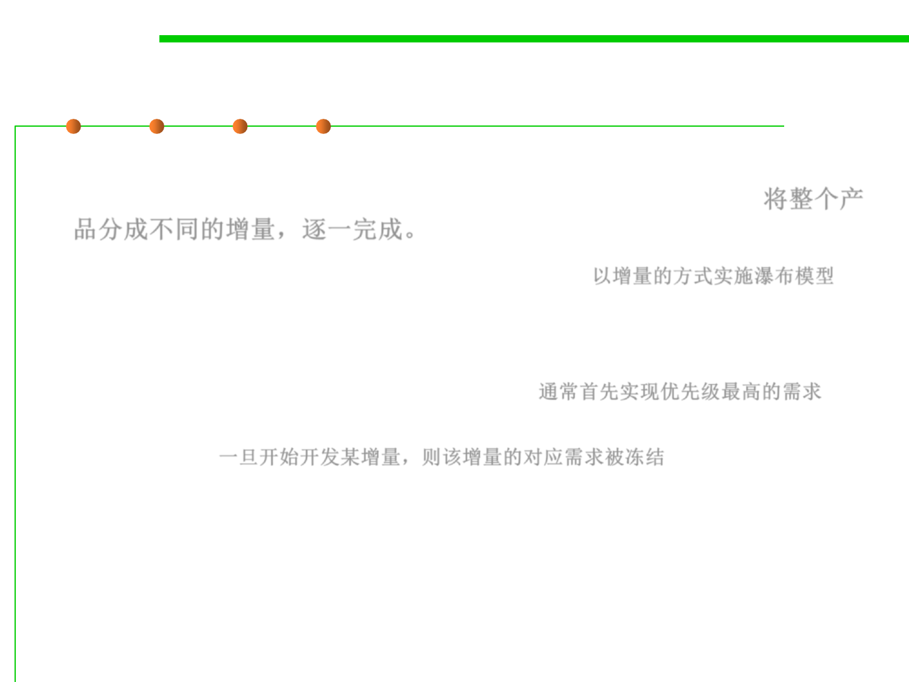

2.1 Software Lifecycle and Configuration Management
Incremental (non-iterative) 增量模型
▪ The product is designed, implemented and tested incrementally (a
little more is added each time) until the product is finished. 将整个产
品分成不同的增量，逐一完成。
▪ It applies the waterfall model incrementally. 以增量的方式实施瀑布模型
– System is broken down into many mini development projects.
– Partial systems are built to produce the final system.
– First tackled highest priority requirements. 通常首先实现优先级最高的需求
– The requirement of a portion is frozen once the incremented portion is
developed. 一旦开始开发某增量，则该增量的对应需求被冻结